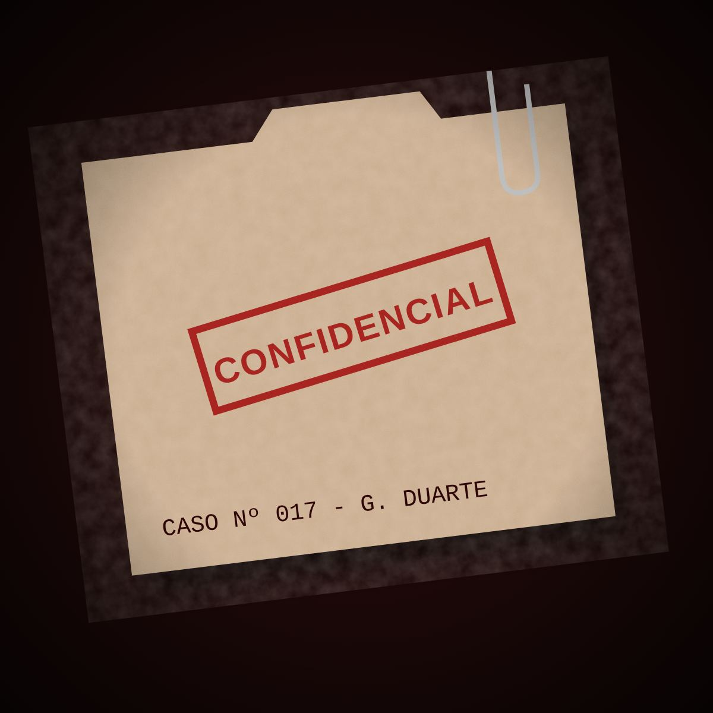

Caso nº 017
Um novo caso
Recebi este arquivo há uma hora e ainda não consegui fechar. Uma morte numa festa cheia, quatro suspeitos e nenhuma confissão. Preciso de alguém que veja o que eu deixei passar.
São 8 perguntas. Não existe resposta errada: cada escolha mostra como você investiga.

Sexta-feira, 23h40
O último brinde da Galeria Duarte
Helena Duarte, dona da galeria, é encontrada morta no próprio escritório, pouco depois de brindar a abertura de uma nova exposição. A perícia confirma: envenenamento.
Quatro pessoas estiveram perto dela naquela noite:
- Beatriz Leme a garçonete que serviu o vinho
- Otávio Duarte o marido, que herda o seguro de vida
- Rafael Moura o restaurador dos quadros da galeria
- Lívia Prado a sócia, que queria vender a galeria
Leia cada pista com atenção. No final, você vai apontar o culpado.
O veredito
Quem é o assassino?
Você já tem todas as pistas. Escolha um suspeito e faça a acusação.
Resolvido
Caso encerrado
Foi Rafael Moura. Ele falsificou a assinatura do quadro mais valioso da galeria durante a restauração. Quando Helena descobriu a fraude, ele saiu do salão no meio do discurso de Otávio e envenenou a taça dela com o solvente da oficina.
Ver meu dashboard